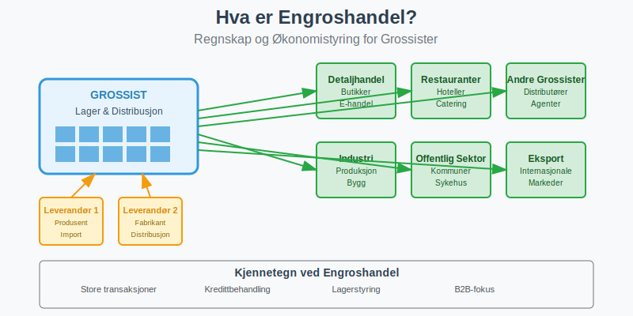
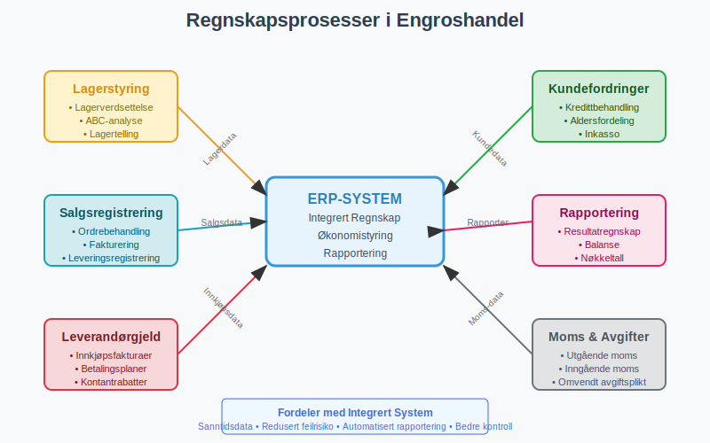
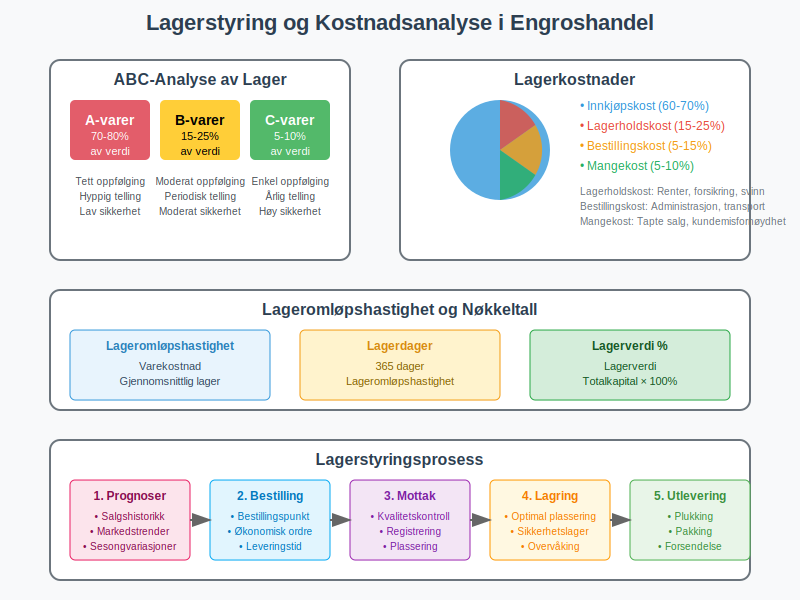
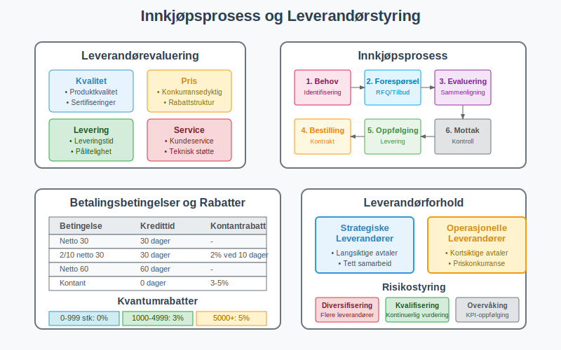
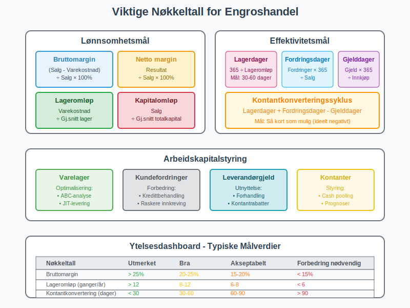

Engroshandel er salg av varer i store kvanta til andre virksomheter, typisk detaljhandel eller andre grossister, for videresalg til sluttforbrukere. Dette er en kompleks virksomhetstype som krever spesialisert regnskapsføring på grunn av store transaksjoner, omfattende lagerstyring og komplekse leverandør- og kunderelationer.

Hva er Engroshandel?
Engroshandel omfatter alle former for salg til andre virksomheter som skal selge varene videre, inkludert:
- Tradisjonelle grossister - fysiske lager og distribusjon
- Importører - innførsel av varer fra utlandet
- Agenter og meglere - formidling uten eget lager
- Cash & Carry - selvbetjening for mindre detaljister
- B2B e-handel - digitale grossistplattformer
Kjennetegn ved Engroshandel
Engroshandelsvirksomheter har flere unike karakteristikker som påvirker regnskapsføringen:
- Store transaksjoner med færre, men større salg
- Omfattende lagerstyring med høye lagerverdier
- Kredittbehandling og kundeoppfølging
- Komplekse leverandørforhold og innkjøpsavtaler
- Sesongvariasjoner og markedssykluser
- Logistikk og distribusjon som kritisk suksessfaktor
Regnskapsføring i Engroshandel
Grunnleggende Regnskapsprinsipper
Engroshandel følger standard regnskapsprinsipper, men med spesiell fokus på:

Viktige Regnskapsområder:
| Område | Beskrivelse | Utfordringer |
|---|---|---|
| Lagerstyring | Store lagerverdier og kompleks logistikk | Ukurans, sesongvariasjoner, lagerkostnader |
| Kundefordringer | Kredittbehandling og oppfølging | Kredittrisiko, inkasso, aldersfordeling |
| Leverandørgjeld | Innkjøp og betalingsbetingelser | Kontantrabatter, kredittider, valutarisiko |
| Moms | Kompleks moms-håndtering | Ulike satser, eksport/import, omvendt avgiftsplikt |
| Logistikk | Transport og lagerkostnader (dokumentert med fraktbrev) | Kostnadsallokering, effektivitetsmåling |
Lagerstyring og Varebeholdning
Lagerstyring er kritisk i engroshandel og representerer ofte den største posten i balansen.
Lagerverdsettelse
Engroshandel bruker typisk følgende metoder:
- FIFO (First In, First Out) - mest vanlig for daterte varer
- Gjennomsnittskost - for homogene råvarer
- Standardkost - for produksjonsindustri
- Spesifikk identifikasjon - for unike/dyre varer med GTIN/EAN-koder
Lagerkostnader og ABC-analyse

Engroshandel må håndtere omfattende lagerkostnader:
- Innkjøpskost - direkte varekostnad
- Lagerholdskost - renter, forsikring, svinn
- Bestillingskost - administrasjon og transport (dokumentert med fraktbrev)
- Mangekost - tapte salg ved utsolgte varer
ABC-klassifisering av Lager:
| Kategori | Andel av verdi | Andel av antall | Styringsfokus |
|---|---|---|---|
| A-varer | 70-80% | 10-20% | Tett oppfølging, hyppig telling |
| B-varer | 15-25% | 20-30% | Moderat oppfølging, periodisk telling |
| C-varer | 5-10% | 50-70% | Enkel oppfølging, årlig telling |
Kundefordringer og Kredittbehandling
Engroshandel opererer typisk med kredittbehandling som krever omfattende oppfølging:
Kredittbehandling
- Kredittvurdering av nye kunder
- Kredittgrenser og overvåking
- Betalingsbetingelser - typisk 30-90 dager
- Kontantrabatter for tidlig betaling
- Inkassohåndtering ved forsinket betaling
Aldersfordeling av Kundefordringer
| Aldersgruppe | Risikofaktor | Oppfølging |
|---|---|---|
| 0-30 dager | Lav | Rutineoppfølging |
| 31-60 dager | Moderat | Purring og kontakt |
| 61-90 dager | Høy | Aktiv oppfølging |
| Over 90 dager | Meget høy | Inkasso/avskrivning |
Leverandørforhold og Innkjøp
Effektiv leverandørstyring er kritisk for suksess i engroshandel. For en omfattende guide til alle aspekter av leverandørstyring, inkludert strategisk kategorisering, risikostyring, digitalisering og beste praksis, se vår detaljerte artikkel om leverandører.

Strategisk Innkjøp
Engroshandel må håndtere komplekse leverandørforhold:
- Leverandørevaluering og kvalifisering
- Forhandling av priser og betingelser
- Kontraktsstyring og rammeavtaler
- Leverandørdiversifisering for risikospredning
- Kvalitetssikring og leveransepålitelighet
Innkjøpsbetingelser
Typiske betingelser i engroshandel:
- Betalingsbetingelser - 30-60 dager kreditt
- Kontantrabatter - 2-5% ved tidlig betaling
- Kvantumrabatter - volumberegnet prising
- Årsrabatter - bonus basert på totalt innkjøp
- Returrett og reklamasjonsordninger
Moms i Engroshandel
Utgående Moms
Engroshandel må håndtere utgående moms på salg til registrerte virksomheter:
| Vare/Tjeneste | Moms-sats | Særlige forhold |
|---|---|---|
| Vanlige varer | 25% | Standard sats |
| Næringsmidler | 15% | Matvarer til videresalg |
| Bøker/aviser | 0% | Trykte publikasjoner |
| Eksport | 0% | Salg til utlandet |
Inngående Moms
Grossister kan trekke fra inngående moms på:
- Vareinnkjøp til videresalg
- Driftskostnader som lager, transport
- Investeringer i lager- og logistikkutstyr
- Tjenester som regnskap og IT-systemer
Omvendt Avgiftsplikt
Ved import og enkelte tjenester gjelder omvendt avgiftsplikt:
- Import fra tredjeland - moms beregnes ved innførsel
- Tjenester fra utlandet - kjøper beregner moms
- Byggetjenester - spesielle regler
- Elektroniske tjenester - nye EU-regler
Økonomistyring i Engroshandel
Nøkkeltall og KPI-er

Engroshandel bruker spesialiserte nøkkeltall:
Lønnsomhetsmål:
- Bruttomargin = (Salg - Varekostnad) / Salg × 100%
- Netto margin = Resultat / Salg × 100%
- Lageromløpshastighet = Varekostnad / Gjennomsnittlig lager
- Kapitalomløpshastighet = Salg / Gjennomsnittlig totalkapital
Effektivitetsmål:
- Lagerdager = (Gjennomsnittlig lager / Varekostnad) × 365
- Kundefordringsdager = (Gjennomsnittlig kundefordringer / Salg) × 365
- Leverandørgjelddager = (Gjennomsnittlig leverandørgjeld / Innkjøp) × 365
- Kontantkonverteringssyklus = Lagerdager + Kundefordringsdager - Leverandørgjelddager
Arbeidskapitalstyring
Engroshandel krever aktiv arbeidskapitalstyring:
Komponenter av Arbeidskapital:
- Varelager - optimalisering av lagernivå
- Kundefordringer - kredittbehandling og oppfølging
- Leverandørgjeld - utnyttelse av kredittider
- Kontanter - likviditetsstyring
Optimalisering av Arbeidskapital:
| Område | Tiltak | Effekt |
|---|---|---|
| Lager | ABC-analyse, JIT-levering | Redusert kapitalbinding |
| Fordringer | Bedre kredittbehandling | Raskere innbetaling |
| Gjeld | Forhandling av betingelser | Bedre kontantstrøm |
| Kontanter | Cash pooling, prognoser | Optimalisert likviditet |
Budsjettering og Prognoser
Engroshandel krever detaljert budsjettering på grunn av:
- Markedssykluser - konjunkturvariasjoner
- Sesongvariasjoner - høy- og lavsesong
- Leverandørforhold - prisendringer og tilgjengelighet
- Konkurransesituasjon - markedsandel og prising
- Valutarisiko - for importører
Teknologi og Digitalisering
Integrerte Systemer
Moderne engroshandel bruker integrerte systemer:
- ERP-system (Enterprise Resource Planning)
- WMS (Warehouse Management System)
- CRM-system (Customer Relationship Management)
- EDI (Electronic Data Interchange)
- B2B e-handelplattform
Automatisering av Regnskapsføring
Teknologi muliggjør automatisering av:
- Ordrebehandling fra kunder
- Lageroppdateringer ved salg og innkjøp
- Fakturabehandling med OCR-teknologi
- Betalingsoppfølging og purring
- Rapportering og nøkkeltall
Digitale Trender
- B2B e-handel - selvbetjening for kunder
- Kunstig intelligens - for prognoser og optimalisering
- IoT (Internet of Things) - smart lagerstyring
- Blockchain - for sporbarhet og sikkerhet
- Robotisering - automatiserte lager
Utfordringer i Engroshandel
Operasjonelle Utfordringer
- Markedsvolatilitet - prissvingninger og etterspørsel
- Leverandørrisiko - avhengighet av nøkkelleverandører
- Logistikkompleksitet - transport og distribusjon
- Teknologiutvikling - digitalisering og automatisering
Regnskapsmessige Utfordringer
- Lagerverdsettelse - store verdier og kompleksitet
- Kredittrisiko - kundefordringer og avskrivninger
- Valutarisiko - for importører og eksportører
- Moms-kompleksitet - ulike satser og regler
Finansielle Utfordringer
- Kapitalbinding - høye lagerverdier
- Kontantstrøm - lange kredittider
- Finansiering - behov for arbeidskapital
- Risikostyring - marked, kreditt og operasjonell risiko
Compliance og Regulering
Engroshandel må forholde seg til:
- Bokføringsloven - dokumentasjon og oppbevaring
- Tollregelverk - for importører
- Produktansvarsloven - kvalitet og sikkerhet
- Konkurranseloven - prising og markedsadferd
- GDPR - behandling av kundedata
Beste Praksis for Engroshandel
Daglige Rutiner
- Ordrebehandling og leveringsplanlegging
- Lageroppdatering og disponering
- Kundeoppfølging og kredittovervåking
- Leverandørkommunikasjon og innkjøpsplanlegging
Ukentlige Oppgaver
- Lageranalyse og bestillingsforslag
- Kundefordringer aldersfordeling
- Kontantstrøm prognose
- Nøkkeltall oppfølging
Månedlige Oppgaver
- Fullstendig lageranalyse og verdsettelse
- Leverandøravstemming og fakturagjennomgang
- Moms-oppgave forberedelse og levering
- Resultatanalyse og budsjettoppfølging
Kvartalsvise Aktiviteter
- Kredittgjennomgang og risikovurdering
- Leverandørevaluering og forhandlinger
- Markedsanalyse og konkurranseovervåking
- Strategisk planlegging og budsjettjustering
Fremtiden for Engroshandel
Digitale Trender
- B2B markedsplasser - digitale økosystemer
- Prediktiv analyse - AI-drevet prognoser
- Automatiserte lager - robotisering og AI
- Bærekraftig handel - miljøfokus og sirkulærøkonomi
Regnskapsmessige Implikasjoner
- Sanntidsrapportering - kontinuerlig oppdatering
- Automatisert compliance - regelverkshåndtering
- Integrert risikostyring - helhetlig tilnærming
- Prediktiv økonomiledelse - fremtidsrettet analyse
Konklusjon
Engroshandel representerer en kompleks og kapitalkrevende virksomhetstype som krever spesialisert kunnskap innen regnskapsføring og økonomistyring. Suksess avhenger av:
- Effektiv lagerstyring og arbeidskapitaloptimalisering
- Profesjonell kredittbehandling og risikostyring
- Strategiske leverandørforhold og innkjøpsoptimalisering
- Teknologisk modernisering for konkurranseevne
Ved å implementere beste praksis innen regnskapsføring, investere i moderne teknologi og fokusere på kontinuerlig forbedring kan engroshandelsvirksomheter oppnå både operasjonell effektivitet og finansiell kontroll som grunnlag for bærekraftig vekst i et stadig mer konkurranseutsatt marked.